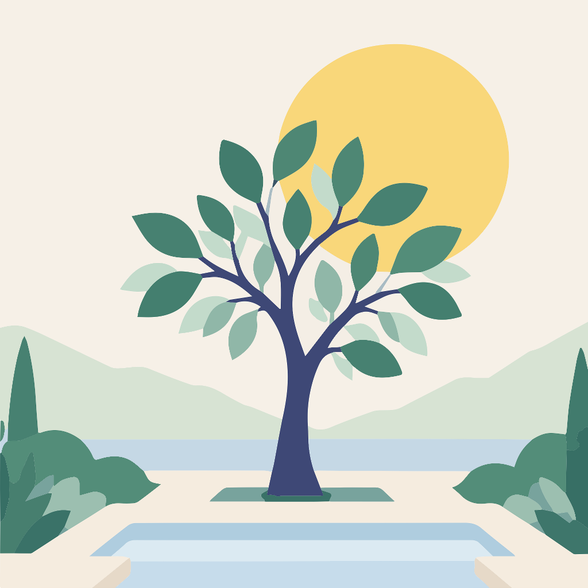

Politique de confidentialité
En bref
Sans compte, ta progression et tes notes restent sur ton téléphone. L’appli envoie seulement des statistiques anonymes (le pays et la langue du téléphone), que tu peux couper dans ton Profil.
Avec un compte (facultatif), on garde seulement ton adresse email, ta progression et tes notes, pour les sauvegarder et les retrouver sur un autre téléphone. Elles sont hébergées dans l’Union européenne, en Suède.
L’appli est gratuite. Les dons et les décors de la boutique du jardin passent par l’App Store d’Apple ou par Google Play : on ne voit jamais tes coordonnées bancaires, ni ton nom, ni ton identifiant Apple ou Google.
Pas de publicité, pas de revente de données, pas de suivi de ce que tu fais dans l’appli ni ailleurs.
Qui est responsable de tes données
Ma mémorisation est publiée par Insaf Aberkane, en Belgique, responsable du traitement de tes données.
Les données que l’appli utilise
Ta progression : tes sourates et leurs dossiers, les versets mémorisés, les jours de boucle, les dates de révision, les jours passés avec le Coran, le modèle de chaque arbre, les décors achetés dans la boutique du jardin, ceux que tu as choisis et tes réglages. Tes notes (personnelles, sur les versets et sur les sourates) et les couleurs que tu poses sur les versets et les mots sont enregistrées avec elle.
Sans compte, ces informations sont enregistrées uniquement sur ton téléphone.
Avec un compte, elles sont aussi enregistrées dans le cloud, avec ton adresse email. Lors de chaque connexion, notre hébergeur garde aussi des informations techniques (comme l’adresse IP et l’heure de connexion) pour assurer la sécurité du service.
L’appli ne te demande ni ton nom, ni ta localisation, ni tes contacts, ni tes photos.
Pourquoi
Ton adresse email sert uniquement à t’envoyer le code de connexion et à reconnaître ton compte (ou, avec la connexion Apple, seulement à reconnaître ton compte).
Ta progression sert uniquement à la sauvegarder et à la retrouver sur tes appareils.
Ces données sont traitées parce que tu as choisi de créer un compte pour utiliser la sauvegarde dans le cloud.
Les dons et la boutique du jardin
Les dons et les décors de la boutique du jardin (arbres, buissons, maisons et ambiances) sont des achats intégrés de l’App Store (sur iPhone et iPad) ou de Google Play (sur Android). Le paiement est entièrement géré par Apple ou par Google, selon leur propre politique de confidentialité (apple.com/fr/legal/privacy et policies.google.com/privacy).
Apple ou Google indique seulement à l’appli ce qui a été acheté et si l’achat est valide (le produit, la date et un numéro de transaction), pour pouvoir te dire merci et te donner ton décor.
Les décors achetés sont enregistrés avec ta progression : sur ton téléphone, et aussi dans le cloud si tu as un compte. Le bouton « Restaurer mes achats » demande simplement à Apple ou à Google la liste de tes achats.
Apple et Google nous transmettent aussi des rapports sans ton identité (par exemple le nombre d’achats par pays), pour la comptabilité.
Un don ne débloque rien, et la boutique ne change que le décor du jardin : toute la mémorisation reste entière et gratuite pour tout le monde.
La connexion avec Apple
Sur iPhone et iPad, tu peux créer ton compte ou te connecter avec « Continuer avec Apple », au lieu du code par email.
Apple transmet alors seulement ton adresse email et un identifiant propre à Ma mémorisation, pour reconnaître ton compte. Si tu choisis « Masquer mon adresse e-mail », Apple crée une adresse qui fait suivre les messages vers la tienne : on ne voit jamais ta vraie adresse.
L’appli ne demande pas ton nom à Apple, et Apple ne voit ni ta progression ni tes notes. La connexion est gérée par Apple selon sa propre politique de confidentialité (apple.com/fr/legal/privacy).
La newsletter
Si tu t’inscris à notre newsletter (sur mamemorisation.beehiiv.com), on garde ton adresse email pour t’envoyer les nouvelles de l’appli. Elle n’a aucun lien avec l’appli ni avec ton compte.
La newsletter est gérée par Beehiiv, une entreprise américaine : ton adresse email peut donc être traitée aux États-Unis, selon sa propre politique de confidentialité (beehiiv.com/privacy).
Ton adresse est utilisée parce que tu as accepté de recevoir la newsletter. Tu peux te désinscrire à tout moment avec le lien en bas de chaque email : ton adresse n’est alors plus utilisée.
Les statistiques anonymes
Pour savoir combien de personnes utilisent l’appli et dans quels pays, l’appli envoie un petit signal : une fois à la première ouverture, une fois par jour où tu l’ouvres, et à chaque don (avec son montant).
Ce signal contient seulement le pays et la langue choisis dans les réglages du téléphone, et s’il s’agit d’un iPhone ou d’un Android. Il ne contient aucun identifiant, ni ton email, ni ta progression, et l’adresse IP n’est pas enregistrée avec ces chiffres (notre hébergeur la garde seulement quelques jours dans ses journaux techniques, pour la sécurité) : on ne peut pas savoir qui l’a envoyé.
Ces chiffres sont hébergés par Supabase dans l’Union européenne (en Suède) et seule l’équipe de Ma mémorisation peut les voir, en totaux par pays.
Tu peux couper ces statistiques à tout moment dans ton Profil (« Statistiques anonymes »).
Qui y a accès
Personne d’autre que toi ne peut lire tes données depuis l’appli : la base de données refuse tout accès aux données d’un autre compte.
Deux services nous aident à faire fonctionner le compte : Supabase, qui héberge la base de données et les comptes dans l’Union européenne (à Stockholm, en Suède), et Gmail (Google), qui envoie l’email avec ton code de connexion : ton adresse email passe donc aussi par Google, selon sa propre politique de confidentialité (policies.google.com/privacy).
Apple ou Google gère le paiement des dons et des achats de la boutique (voir « Les dons et la boutique du jardin »), et Apple gère la connexion avec Apple (voir « La connexion avec Apple »).
Tes données ne sont ni vendues, ni louées, ni partagées à des fins publicitaires.
Combien de temps
Tes données restent dans le cloud tant que ton compte existe.
Quand tu supprimes ton compte, ton adresse email, ta progression et tes notes sont effacées de la base de données tout de suite. Les copies techniques de sécurité éventuelles de l’hébergeur disparaissent ensuite d’elles-mêmes.
Les données enregistrées sur ton téléphone y restent jusqu’à ce que tu supprimes l’appli.
Tes droits
Tu peux à tout moment consulter, corriger, exporter ou supprimer tes données.
Exporter : Profil → Mes données → Sauvegarde dans un fichier → Exporter.
Supprimer : Profil → Compte → Supprimer mon compte.
Pour toute autre demande, tu peux nous écrire. Si tu penses que tes droits ne sont pas respectés, tu peux aussi contacter l’autorité de protection des données de ton pays : en France, la CNIL (cnil.fr) ; en Belgique, l’Autorité de protection des données (autoriteprotectiondonnees.be).
L’écoute des récitations
Pour écouter le Coran, l’appli télécharge les récitations (un fichier par verset) depuis everyayah.com, un site gratuit de récitations. Comme pour n’importe quel site, celui-ci voit alors l’adresse IP de ton téléphone et les fichiers demandés (le récitateur et les versets). L’appli ne lui envoie rien d’autre : ni ton email, ni ta progression, ni aucun identifiant.
Les fichiers téléchargés restent sur ton téléphone, pour les réécouter sans Internet. Tu peux les effacer à tout moment dans les réglages de l’écoute.
Liens vers Instagram et Facebook
Les boutons « Nous suivre » ouvrent nos pages Instagram et Facebook en dehors de l’appli. Ce que tu y fais dépend alors de la politique de confidentialité de ces services : l’appli ne leur envoie rien.
Sécurité
Les échanges entre l’appli et le cloud sont chiffrés. Il n’y a pas de mot de passe : tu te connectes avec un code temporaire reçu par email, ou avec Apple sur iPhone et iPad.
Changements
Si l’appli change sa façon d’utiliser tes données, cette page sera mise à jour et la date ci-dessous changera.
Nous écrire : mamemorisation@gmail.com
Mise à jour : 24 novembre 2026